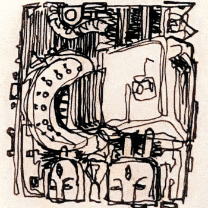

Through the door is a long thin hallway with untouched concrete walls that opens out into a room of which the scale is difficult to discern. This is an engine room. There’s a couple of large cylinders that take up the room, in a faded salmon red. It’s quiet like it shouldn’t be. There are puddles covering the floor, which is made of metal paneling, and statues have been affixed to the bases of the cylinders. I can’t tell what these were used for. I already feel a little lost stepping further into the room. Walking among the cylinders I find myself circling back without thinking.